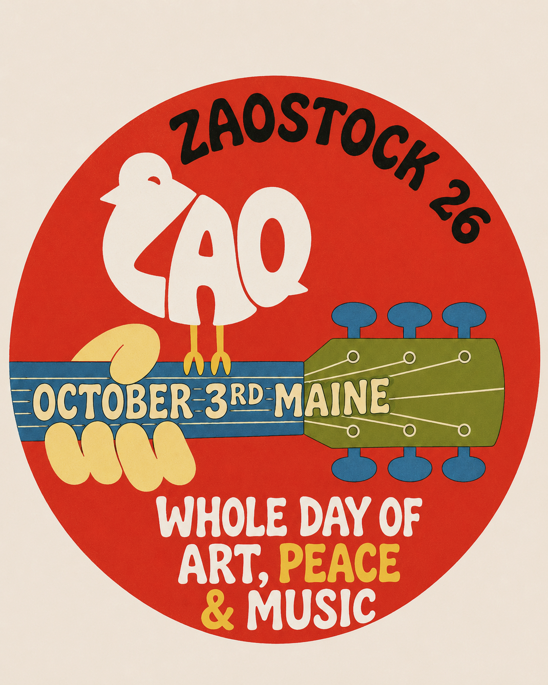

Slide 1 · Cover
ZAOstock
Saturday October 3, 2026 · Franklin Street Parklet, downtown Ellsworth, Maine
Free to attend. Part of the 9th annual Art of Ellsworth, during Maine Craft Weekend.
ZAO Festivals presents ZAOstock

Speaker notes
Say the date, the street and the price in the first ten seconds. Free-to-attend is the fact that makes everything else make sense to a local business: this is footfall on their block, not a ticketed event that competes with them.
Slide 2 · Who we are
The ZAO.
ZTalent Artist Organization. A community that returns margin, data and IP rights to the artists in it. Music first, community second, technology third.
- 100+ consecutive weekly governance sessions since 2024-07-30
- 157 verified on-chain governance members, 188+ Fractal participants
- 500+ newsletter subscribers, daily editions verify before print
- ZAO Festivals is the events arm. ZAOstock is its flagship.
Since
2024Weekly, without a miss, since 30 July 2024Speaker notes
For a local room, lead with the weekly-since-2024 number and stop. It is the only one that answers the question they are actually asking, which is "are you going to still exist in October". Skip the governance and membership detail unless asked - it invites a conversation about technology, and this deck is not selling technology.
Newsletter count is cited from docs 443/1277 (July 2026) and is marked VERIFY in the fact sheet. Do not print a precise subscriber number without a re-pull.
Slide 3 · Track record
What came before.
2024 · New York City, NFT NYC
ZAO-PALOOZA
12 artists. Broke even.
Dec 6, 2024 · Miami, Art Basel Wynwood
ZAO-CHELLA
10 artists. First IRL WaveWarZ. AR art.
Jul 25, 2026 · Laurel, Maryland
ZAOville
The media dry run.
~$1,497 raised for HuRya Empowerment Foundation across two WaveWarZ benefit battles, with platform fees waived.
Speaker notes
Maceo's advice on the Aug 24 standup, and it is good: lead with ZAO-CHELLA and pull footage and stills from CHELLA and PALOOZA rather than building this slide from scratch. He offered his own sponsor-winning decks as templates.
"Broke even" is the right thing to say out loud about PALOOZA. A sponsor who hears a straight answer about a past event believes the rest of the deck.
Asset gap: this slide needs images and we do not have them selected. The colour swatches above stand in for them. See the Links and Assets tab - it is the biggest gap blocking the deck.
Slide 4 · Why ZAOstock, why Maine
Ellsworth is the gateway to Acadia.
Over 4 million people drove through in 2025. Downtown has just received National Historic Register designation. Zaal lives here and bought a house here - this is a hometown event, not a tour stop.
Expected attendance: 200-250 in person, plus about 1,000 online.
Speaker notes
Unblocked. Zaal typed the attendance figures on 2026-08-27 and slide 4 may use them. Say both numbers, and say them in that order. The in-person figure is the one a local business cares about because it is footfall on their block. The online figure is what a sponsor's logo reaches beyond the street, and it is roughly four times the crowd.
Do not present these as the awareness goal. "4,000 of the 8,000 people in Ellsworth" is a separate, larger ambition about the town hearing of the event - not a projection of who turns up. Keep the two apart on the slide and in the room.
The 4M-through-Acadia number is the strongest fact in the deck for a local business and it is doing something specific: it says the street outside your door already has traffic, and on October 3 some of it stops. Do not dilute it by stacking other numbers around it.
General and online variants swap this slide for the web3 use case.
Slide 5 · The day
One venue at a time. Outdoors, then in.
| Time | Where | What |
|---|---|---|
| 12:00 | Franklin Street Parklet, outdoors | Doors, and a short welcome |
| from 12:05 | Franklin Street Parklet, outdoors | Live sets, with our MC and sponsor spots in every changeover |
| 16:00 - 18:00 | Franklin Street Parklet, outdoors | WaveWarZ live music battles, opening with the WaveWarZ story |
| 18:00 | Franklin Street to Black Moon | Everyone walks next door, together |
| 18:00 - 19:30 | Black Moon Public House, indoors | DJ set |
| 19:30 - close | Black Moon Public House, indoors | Live music to close. In booking |
Saturday 3 October. Rain or shine, tent coverage via Wallace Events. Free to attend.
Speaker notes
Source: PRODUCTION ros-v4, 2026-08-27, which supersedes ros-v3. The evening order flipped: the DJ now opens the indoor block at 18:00 and live music closes from 19:30. The closing live music is in booking - no act, no downbeat.
Do not print, and do not say: any act name, a set count, set lengths, "45-minute sets", or a DJ between the daytime sets. The 18:00-19:30 DJ set is the one DJ on this slide and it is indoors.
No act is described as confirmed anywhere in this deck. If you have seen an older version, or the website, naming an act as confirmed, do not carry that into the room. The lineup is announced on 1 September and that is the answer if a sponsor asks who is playing.
The daytime block deliberately has no end time printed. ros-v4 gives "live sets from 12:05" and WaveWarZ at 16:00, and does not state when the sets stop. Inventing a boundary is how a schedule slide stops matching the day.
"Sponsor spots in every changeover" is the most sellable line here and it is deliberately not a number. The count of reads is Zaal's to state. Say "in every changeover" and let them ask.
The single most important sentence remains "one venue at a time". One crowd, one PA crew, and at six the whole street walks into the bar together. For a local sponsor, that walk is the moment their block gets busy. The running order is Zaal's plan and is not public.
Slide 6 · WaveWarZ
The live music battle.
Two artists go head to head on stage and the audience decides, in the street and online.
On the day, 16:00 to 18:00: Stilo, Jango, Lui and Quan battling, with Hurricane on the mic.
Measured 2026-08-27, live from the public API re-pull before print
| Battles run | 1,452 |
| Lifetime volume | 913.9 SOL about $97,961 at $107.19/SOL |
| Paid to artists, automatic and on-chain | 14.23 SOL about $1,525 |
| Paid out to winning traders | 403.8 SOL about $43,285, 1,874 withdrawals |
Speaker notes
These are live figures pulled the day the deck was built, not the July numbers still circulating in older docs. 1,452 is 53 main events, 171 main battles, 1,245 quick, 36 community. Re-pull before printing - it is one curl to wavewarz.info/api/public/stats.
For a local room, the number that lands is the one paid to artists automatically. It is small and it is the point: the mechanism works and it pays the artist without anyone deciding to.
Slide 7 · The virtual side
A stream runs alongside the day.
A live stream with the Baraza OBS rig, and a Decentraland mirror of Franklin Street.
Not in the local deck
Remove this page before presenting to an Ellsworth business. Keep it in the general and online variants.
Speaker notes
Cut this slide from the local deck. It answers a question an Ellsworth business is not asking and it moves the conversation to technology.
Status, so nobody oversells it: the encode path is proven end to end. The stream destination is not - the ingest URL and key are owed by Aziz and the test slipped its 22 August date. Do not put a platform name on this slide until the stream has run once.
Slide 8 · Why partner · LOCAL
Your block, on the busiest weekend of the fall.
- Maine Craft Weekend brings statewide promotion. Art of Ellsworth is in its 9th year. ZAOstock puts live music on Franklin Street inside both.
- Free to attend, so nobody chooses between your business and a ticket.
- We are measuring what the day does for local businesses - an average Saturday against October 3 - and publishing it. If it works, you have the number. If it does not, you have that too.
- You would be joining eight confirmed partners.
Speaker notes
The measurement promise is the differentiator and it is real - it is a live commitment in the production plan, with Black Moon as the first business asked. Do not promise a specific lift. Promise the measurement.
COC Concertz is confirmed as a ZAOstock partner (Zaal, 2026-08-27). It is the virtual concert series, a partnership rather than a ZAO sub-brand. Spelling is COC Concertz - a space, and a z on the end.
Heart of Ellsworth is NOT on that list and must not be added to it. On the 2026-08-13 call Chesnee Barney said official-partner status and logo use have to clear internally first, and it has not. Say "part of Art of Ellsworth", which is true and is about the event, not "Heart of Ellsworth is our partner".
None of the eight has supplied a logo yet, which is why they are names and not marks. Three are outstanding and due Friday 29 August.
This is the slide where Zaal's own framing belongs, verbatim from the 8/17 call: "everyone always thinks to get sponsors it needs to be this big corporate brand... these are our peoples."
Slide 9 · Packages · LOCAL
Five ways in.
| Tier | Price | What it gets |
|---|---|---|
| Presenting | UNSET | Name on the banner, the poster, the stage, the stream. Named in every announcement. Two on-stage mentions. First refusal on 2027 |
| Platform | UNSET | Logo on the poster and the site. Named in the newsletter and the recap. One on-stage mention |
| Sponsor an artist | UNSET | Covers one artist's travel. They make content carrying your name. The artist opts in |
| Community | UNSET | Logo on the site, named in the recap, thanked from stage |
| Friend of the Fest | UNSET | Name on the site and in the newsletter |
Early-close discount: UNSET off any cash tier for a signed yes by UNSET.
In-kind counts at retail value toward a tier, with no extra discount stacked on top. Sponsor-an-artist is never discounted. There is a floor below which there is no negotiation. Sponsorship is a marketing spend; ZAOstock has no fiscal sponsor and nothing here is tax-deductible.
Speaker notes
Blocked. Every figure on this slide is UNSET. The tier names and what each tier gets are settled. The prices are not, and no agent may infer them. A previous draft proposed a ladder topping at $2,500 with an early close of 11 September, sourced to a doc that does not contain those numbers; it was killed on 27 August. See docs/sponsor/slide-9-tier-ladder.md.
Three rules survive the kill and hold at any price: in-kind at retail value with no stacked discount; sponsor-an-artist never discounted, because it is a cost and not a margin; a floor below which there is no negotiation.
This deck asks for sponsorship, never a donation. There is no fiscal sponsor, so nothing here may say tax-deductible - PR #39 already had to strip that claim from two live pages. Sponsorship is advertising spend: different budget, no charitable status needed, which is the better ask for a bank anyway.
Slide 10 · Sponsor an artist
Cover one artist's costs. They make content with your name on it. They opt in.
One business paying for one named person to get to Ellsworth. The artist agrees to it; we do not sell their likeness on their behalf.
Price
UNSETSame field as the third row of slide 9. Doc 2325 attributes a $500 flat model to Zaal from the 8/17 call, unconfirmed.
Speaker notes
Blocked. The $500 attribution has not been confirmed against anything Zaal typed, and the same class of claim on slide 9 turned out to be unsourced. One line for Zaal: confirm $500 or type the number.
This is the most human slide in the deck and it works hardest in a local room. The opt-in matters and should be said out loud.
Real context if it helps the ask: $1.6k was raised through Artizen last season, which covered getting a majority of artists there, plus a $3,000 prize from an Artizen pool. Both are time-delayed and neither arrives before October 3, so Zaal is currently fronting capital himself against money already raised. Use that only if a sponsor asks how it is funded today. It is true and it is not a sympathy pitch.
Slide 11 · What we do for you
Pre, during and post. Not just a name to attach.
Pre
Named in the announcement, the newsletter and the lineup reveal on September 1.
During
Our MC reads you in every changeover. Logo on the backdrop. Presence on the stream.
Post
Named in the recap, in the published local-business measurement, and in the footage that keeps circulating after the day.
Reach is across team accounts, the Farcaster /zao and /zabal channels, Telegram, the daily newsletter and the livestream.
Speaker notes
Do not print a combined follower number. The team's counts come from an April 2026 scrape and were never deduplicated for overlap. Say "tens of thousands across team accounts", or name two accounts and their counts, and let them do the arithmetic.
The post half is what most sponsors do not get elsewhere and it is worth slowing down on.
Slide 12 · Next step
One conversation, then a yes or a no.
Fifteen minutes this week.
Early close: UNSET - the date lands here once slide 9 has prices.
Speaker notes
End with a specific ask, not "let us know". The ask is a fifteen-minute conversation this week. Once slide 9 has prices, the early-close date goes here as the deadline, because a deck with a deadline gets answered and a deck without one gets read and put down.
Appendix · not for the room
Before this deck ships.
Six fields, all Zaal's, all on slide 9
| # | Field | Note |
|---|---|---|
| 1 | Presenting price | |
| 2 | Platform price | |
| 3 | Sponsor-an-artist price | Doc 2325 says $500 from the 8/17 call - confirm or replace. Also slide 10 |
| 4 | Community price | |
| 5 | Friend of the Fest price | |
| 6 | Early-close discount and date | The last useful close is the last day a new sponsor still reaches print; Candy's poster prints the week of September 1. Also slide 12 |
Owed by someone other than Zaal
Partner logos - three still missing (Town of Ellsworth, ENTERACT, Web3Metal), due Friday August 29. Vector or high-res transparent PNG. Blocks the backdrop, the poster and this deck. None of the eight is on disk today, so slide 8 renders names.
Images for slide 3. CHELLA and PALOOZA stills, not yet selected. Swatches stand in.
Two VERIFY marks: the newsletter count (slide 2) and the WaveWarZ figures (slide 6). Re-pull both the day it prints.
How this file was made
Rendered 2026-08-28 by the DESIGN lane from docs/sponsor/deck-2026-10-03.md (origin/main) on DESIGN.md's system. Words are the deck's; only the layout is new. Edit the markdown, then this file, in that order. Print with the browser (landscape letter, one slide per page); toggle speaker notes on first to print them too.